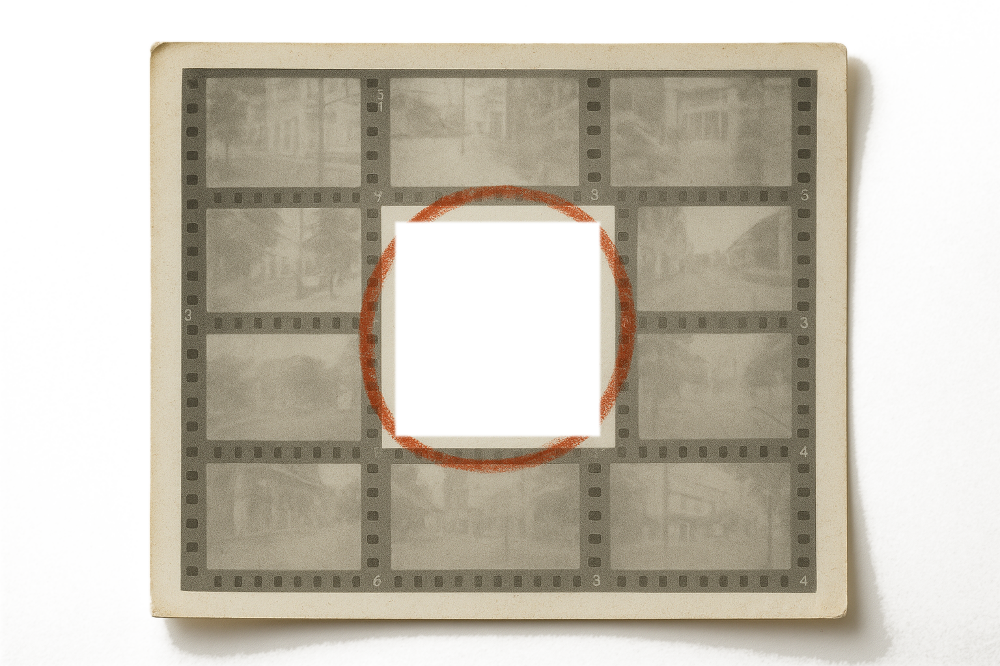
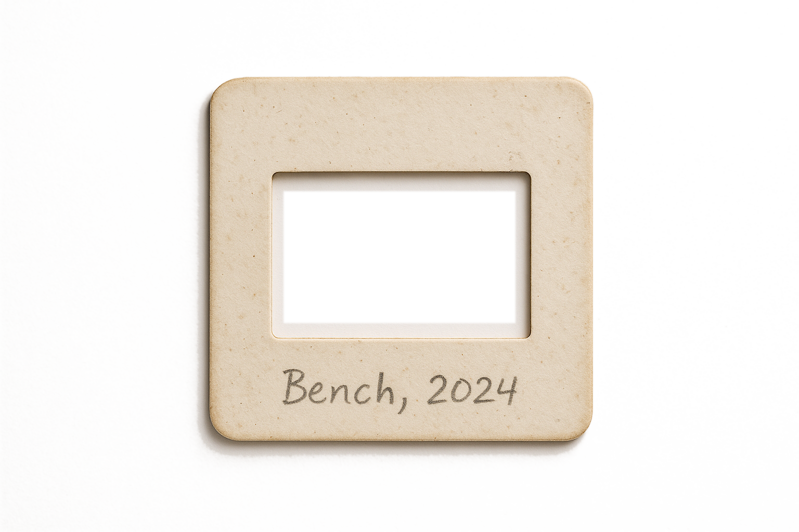

The two artifacts holding the process film, in three grades. The window is clipped to the aperture and the card sits above it, so the film never laps onto the paper and no white shows at the edge.

